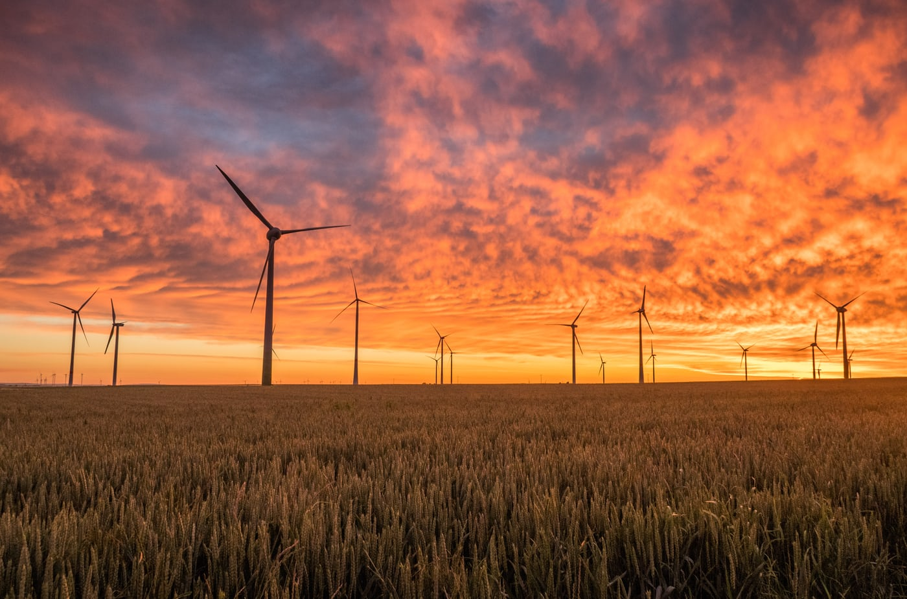

Welcome to The Agricultural World
Agricure is the art and science of growing crops, cultivating soil, and raising livestock.
There are many careers with in the Agriculture world. SOme of them are biochemist, Environmental Engineer, Agronomy Sales Master, and so many more.
